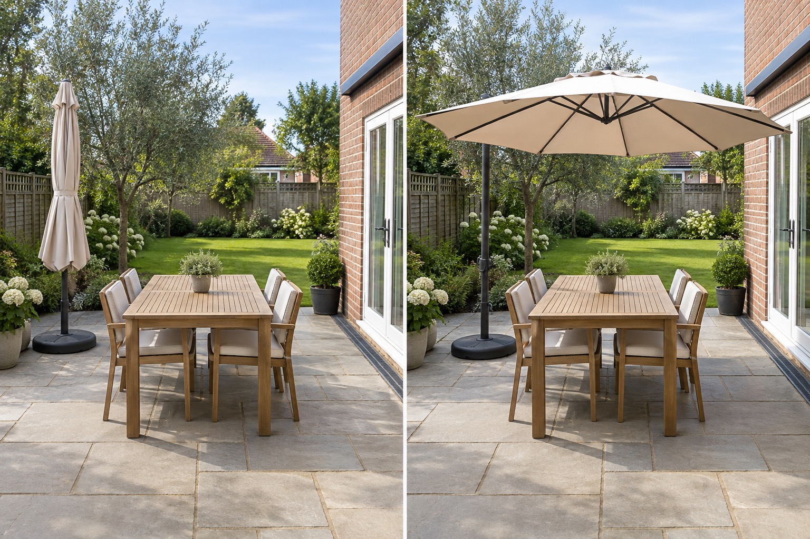

Map the shade window
Record when the seat is used and where direct sun actually falls across seasons.
A pergola and an umbrella solve different planning problems. An umbrella is movable and product-specific; a pergola changes the site and may trigger structural, boundary or permit questions. Start by testing where shade is needed and when.
Editorially reviewed September 10, 2026.
This AI-generated comparison is visual inspiration only. It does not verify dimensions, safety, local rules, products, plants, costs, construction or professional conclusions.

Record when the seat is used and where direct sun actually falls across seasons.
Move and open the real umbrella without blocking doors, chairs or the garden route.
Treat a pergola as a construction decision, not merely a larger version of an umbrella.
Australian Government YourHome shading guidance explains that effective shading responds to climate, orientation and sun angles. City of Monash pergola guidance shows that pergola definitions and permit exemptions depend on local rules and exact construction. These sources frame the decision; they do not certify this pictured layout.
The table, chairs, umbrella and base, patio, door, drain, tree, lawn, boundary and camera remain unchanged. The after view does not prove adequate anchoring, wind resistance or full-day shade.
Photograph the seat at the hours and seasons when shade matters.
Test the umbrella, chairs and doors together, including the path to the garden.
Verify base, wind, closing, storage and maintenance instructions for the exact umbrella.
For a pergola, obtain site-specific design, planning, structure, drainage and utility advice.
Avoid judging shade from one photograph, blocking a door with the base, leaving an umbrella open outside its manual, assuming a pergola is permit-free or ignoring roof runoff and services.
Stop before footings, wall attachment, roofing, excavation or a structural claim. Check local definitions and use qualified design and construction advice.
Not universally. The answer depends on duration, flexibility, weather, site constraints, approvals, maintenance and budget.
A movable trial can reveal the useful shade position and route conflicts, but its manual and weather limits still apply.
Possibly. Definitions and exemptions vary by location, dimensions, roofing, boundaries and property conditions.
Not reliably from one image. Seasonal sun position, orientation, surrounding buildings and time of use require real observation or analysis.
Upload a level, wide photo that keeps access, drains, boundaries, services and mature features visible.
AI concepts require independent verification of site conditions, safety, local rules and professional requirements before physical work.